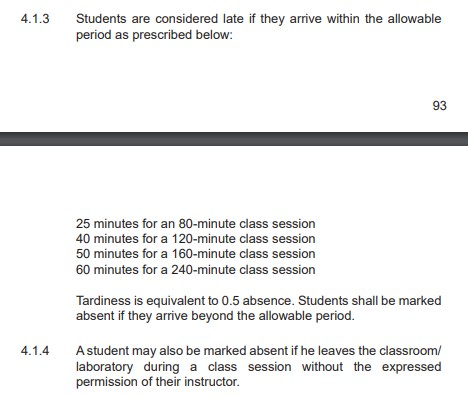
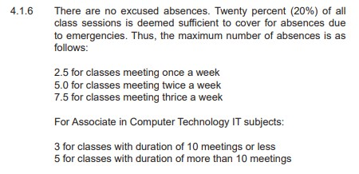
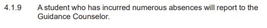

01_A4_ABENALES
Need Finding
Problem:
•APC college students doesn’t keep track on their absences and tardiness.
•Inaccuracy in recording the attendance as per the student’s point of view.
•Some students tend to record/sign other students’ attendance even though they are not physically present.
Needs:
•Accurate recording of attendance (absences & tardiness)
•Attendance has a huge effect in student’s grade. Some subjects require attendance as 50% of student’s grade.
•Fair attendance records for those students who came in class on time.
Solution:
•Create a mobile and web application for teacher’s that will scan the RFID provided in the student’s ID.
•The application will monitor the student’s attendance.
•The scanner will display the time in and time out of the students.
•Data will be stored in a cloud storage that can be viewed by students in the web application and can be managed by the teachers.
Why do we need to solve this problem?
•To be fair for other students who came in class on time.
•To notify a student if he or she is nearing to fail due to absences.
•As per the APC Handbook 2019, students are only allowed to have limited absences. Attendance can affect student’s grade and might fail them. (See photos below.)



•Solving this problem will reduce the number of students failing due to absences.
•This will also resolve the cheating of attendance (student’s views inside the classroom) and thus, consequences shall be applied.
How did we notice this problem?
•Some of the stated problems are the things we experienced in a classroom setting.
•As a student, we see this as a problem since some students are being unfair and we felt being cheated.
•Some students exceeded the amount of absences and still allowed their absence.
•Students who come in late tend to sneak in to class unnoticed.
•Other students cut classes.
•Some professors tend to misplace their attendance record for that day and can result to unfairness in attendance.
What were other options you considered, and why did you choose this solution?
•We chose this solution so that real time updates and time in & time out of students will be precise and easy to know and the records will be stored safely and can easily be accessed by both professors and students. We also choose this solution because it will be convenient for both target users.
•We think that this solution will give an impact to the end-user to get rid of their daily written recordings that replaces it with advanced recording feature.
•We considered making a wall mounted device that will scan their id’s, but it will only take a long time to scan it individually which makes it complicated. We chose this solution to easily scan their id’s and record their attendance without complications.
•One of the options we considered is to have an ID scanner that is like the fingerprint scanner that our professors currently use.